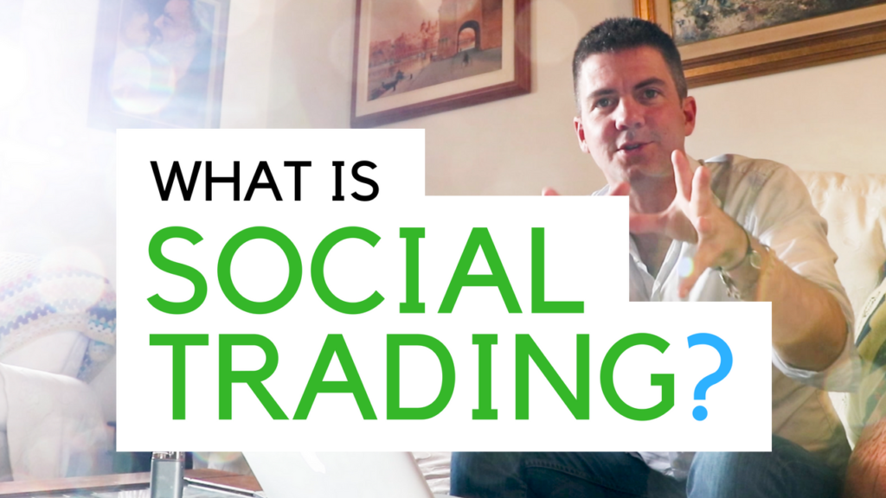
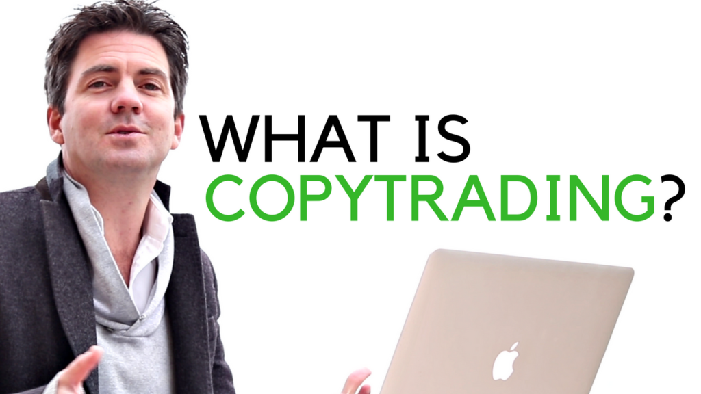
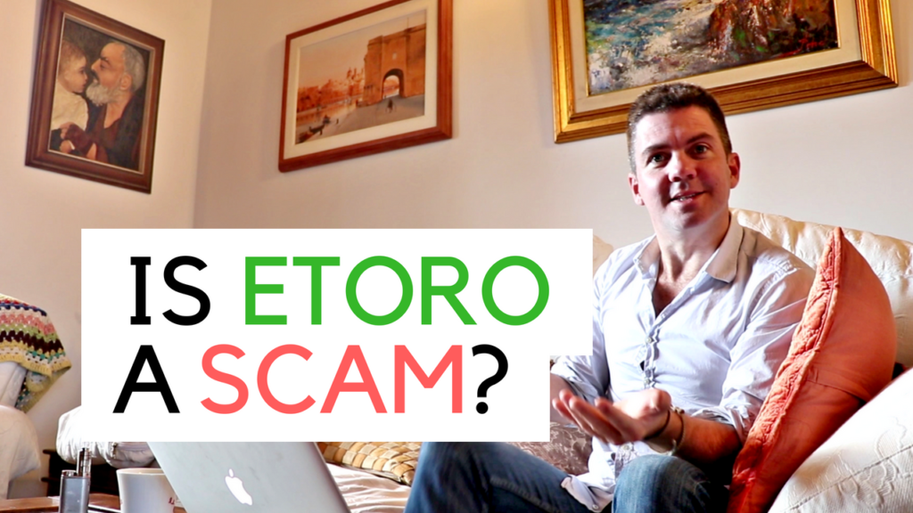

Learn the basics
Start here
New to copy trading? These guides cover everything you need to know before putting money in.

Beginner guide
What is Social Trading?
The history, how it works, the risks, and whether it's right for you. A full breakdown.
Read guide →

Beginner guide
What is Copy Trading?
How copy trading actually works, who you can copy, and what to watch out for.
Read guide →

Platform review
Is eToro a Scam?
I put in real money to find out. Here's my honest take after years of using the platform.
Read review →
Deep dive
How Much Can You Make Copy Trading?
Realistic expectations, real numbers from my portfolio, and what the data actually shows.
Read article →
How-to
Taking Profits from Copy Trading
How and when to withdraw profits — and the mistakes I made early on.
Read article →eToro deep dive
eToro Popular Investor Program
What it is, how to qualify, and whether it's worth pursuing as a trader.
Read article →